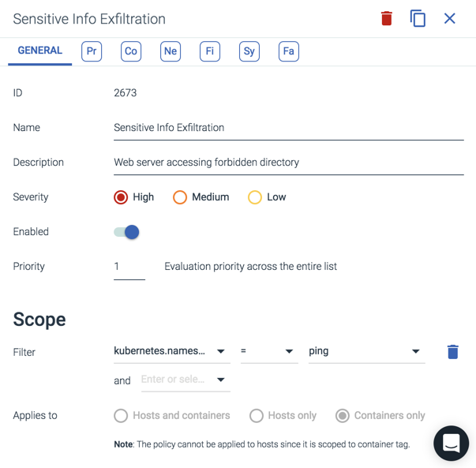
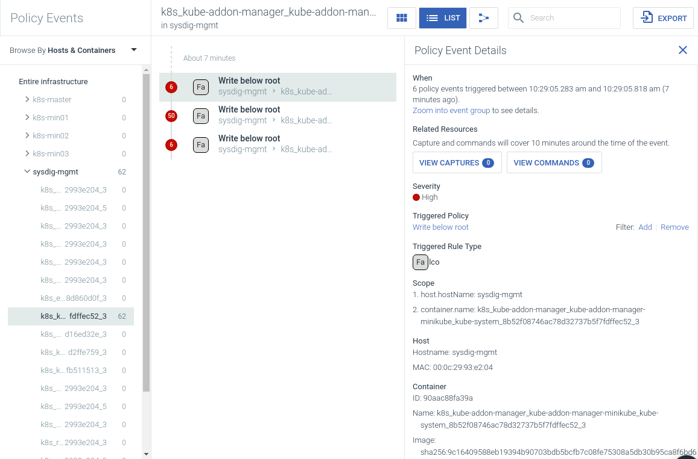
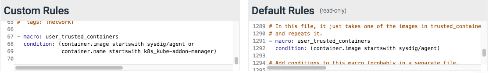

Identify False Positives
False-positive policy events (events that trigger based on normal activity) can occur after the initial installation of Sysdig Secure. While not harmful, it is considered the best practice to mitigate these events if possible. Identifying false positives generally involves the following steps:
Identify the most commonly occurring policy events.
Determine if the events are unique to the environment.
Address the false positives via Falco rule changes.
Address the false positives via policy scope.
Disable the policy/policies that trigger the events.
Examples for each of the steps are outlined below.
Identify Common Policy Events
The events that occur the most often should be addressed first. This can be done from the Policy Events module, by reviewing the list for the most common occurrences:
 |
For a more detailed view, Sysdig provides the python-sdc-client and the Sysdig Secure APIs to access the direct policy event stream. The example program get_secure_policy_events.py, with the --summarize argument, provides a summarized view of the policy events ordered by frequency. --summarize also removes any container information from the output strings, to allow for better aggregation of similar events.
Note
Sysdig also recommends using the python-sdc-client, and in particular get_secure_policy_events.py, to collect policy events for on-premises customers, as Sysdig does not have direct access to the UI for troubleshooting, and the program can be written to a file, and passed on as feedback. For more information about the python-sdc-client, refer to the Sysdig Cloud Python Script Library documentation.
Example output is shown below:
user@host:~$ python examples/get_secure_policy_events.py --help usage: examples/get_secure_policy_events.py [-s|--summarize] [-l|--limit <limit>] <sysdig-token> [<duration sec>|<from sec> <to sec>] -s|--summarize: group policy events by sanitized output and print by frequency -l|--limit: with -s, only print the first <limit> outputs You can find your token at https://secure.sysdig.com/#/settings/user user@host:~$ python examples/get_secure_policy_events.py --summarize 5b83272d-6e3f-44b3-b3b8-9dd8671f98b7 604800 56 Database-related program spawned process other than itself (user=root program=sh -c ls > /dev/null parent=mysqld) 24 Sensitive file opened for reading by non-trusted program (user=root name=ftest command=ftest -i 25200 -a exfiltration file=/etc/shadow parent=docker-containe gparent=docker-containe ggparent=dockerd gggparent=systemd) 14 Rpm database opened for writing by a non-rpm program (command=ftest -i 43200 -a write_rpm_database file=/var/lib/rpm/created-by-event-generator-sh) 1 A shell was spawned in a container with an attached terminal (user=root shell=sh parent=exe cmdline=sh terminal=34870) 1 A shell was spawned in a container with an attached terminal (user=root shell=sh parent=exe cmdline=sh terminal=34871) 1 A shell was spawned in a container with an attached terminal (user=root shell=sh parent=exe cmdline=sh terminal=34872) 1 A shell was spawned in a container with an attached terminal (user=root shell=sh parent=exe cmdline=sh terminal=34869) 1 A shell was spawned in a container with an attached terminal (user=root shell=bash parent=exe cmdline=bash terminal=34816) 1 A shell was spawned in a container with an attached terminal (user=root shell=sh parent=exe cmdline=sh terminal=34867) 1 A shell was spawned in a container with an attached terminal (user=root shell=sh parent=exe cmdline=sh terminal=34868) 1 A shell was spawned in a container with an attached terminal (user=root shell=sh parent=exe cmdline=sh terminal=34866)
Determine Policy Uniqueness
In many cases, policy events are related to the use of common software used in many environments, resulting in multiple customers seeing the same events. If the policy event is likely to occur for other customers, contact Sysdig Support so that the default Falco rules can be updated.
Configure Falco Rules for False Positives
For policy events local to the environment, the first step to address them is by adding custom Falco rules via the Rules Editor tab of the Policies module. These additions will extend or overwrite the behavior of a list, macro, or rule from the default rules section, in order to address the false positive.
A number of rules have a macro with the prefix user_, that can be overridden in the custom rules section in order to change the behavior of a rule. Some examples include:
user_known_write_etc_conditionsuser_read_sensitive_file_conditionsuser_known_change_thread_namespace_binariesuser_shell_container_exclusionsuser_trusted_containersuser_sensitive_mount_containers
If a user_ macro is not available, Sysdig recommends appending changes to an existing list, macro, or rule, instead of overwriting them.
Warning
Overwritten lists, macros, and rules will remain static when the default rules are updated. This could lead to new default rules being shadowed and inaccessible to the user.
The specific changes necessary to the Falco rules depend heavily on the policy that triggered the false positives. A few examples are shown below:
Write below etcFor the
Write Below etcpolicy, there may be an additional program that writes specific file(s) below/etc(this example uses the programcatsd, and the file/etc/catfood.cfg). A macro could then be defined as follows:- macro: catsd_writing_catfood_cfg condition: (proc.name=catsd and fd.name=/etc/catfood.cfg)
In addition, the macro
user_known_write_etc_conditionswould need to be overwritten to add a new exception:- macro: user_known_write_etc_conditions condition: catsd_writing_catfood_cfg
Launch Privileged ContainerFor theLaunch Privileged Containerpolicy, there may be a specific container that must run with privileges. The example macro below uses images starting withregistry.customer.com/mydatastore, and overrides theuser_trusted_containersmacro:- macro: user_trusted_containers condition: (container.image startswith registry.customer.com/mydatastore)
Run shelluntrustedFor the
Run shelluntrustedpolicy, a program may be present that spawns shells in the environment for legitimate purposes. The example below appendsphpto the list of known shell spawn binaries, using theuser_known_shell_spawn_binarieslist:- list: user_known_shell_spawn_binaries append: true items: [php]
For more information on creating Falco rules, refer to the Falco Rules documentation.
Configure Policy Scope for False Positives
If Falco rule changes cannot address the false positive, the scope of the policy can be modified to focus on the parts of the environment where it does/does not occur. For example, there could be a dev environment, run under Kubernetes in a dev namespace, that spawns lots of shells. In this case, the policy could be modified to exclude the dev namespace from the scope, by changing the scope from Entire Infrastructure to kubernetes.namespace.name != "dev":
 |
Disable Policies
If none of the above actions work, the policy can be disabled. To disable a policy:
From the
Policiesmodule, select the relevant policy.Toggle the
Enabledswitch to disable the policy: Click the
Apply Changesbutton.
Example Walkthrough
The example walkthrough below covers modifying a policy and the underlying rules to whitelist a container, in order to minimize false-positive results.
Identify the Container / Image to Whitelist
The container/image can be identified either from the Sysdig Secure UI (if an event has already been triggered), or directly from the host.
From the Sysdig Secure UI
To find the container / image:
From the
Policy Eventsmodule, use the left-hand drill-down menu to identify the object to whitelist. In this example, the desired object is one of the built-in Kubernetes components (k8s_kube-addon-manager): Note
Using the drill-down menu is not strictly necessary, as all of the information is contained within the
Policy Event Detailswindow. However, using the drill-down menu can help verify the correct object to whitelist.Click on the relevant event to open the
Policy Event Detailswindow to review the event details, and identify the object to be whitelisted. In this example, the image is asha256 digestas it is an internal component of Kubernetes, so the container name should be used instead, in case the component is upgraded at a later date.
Note
A variety of metadata can be used for whitelisting. For containers, container name, image name, or digest could be used. Container name is the most common approach, but this option could be spoofed. Image name (such as sysdig/agent) is a more secure option. Using the digest is the most secure option as the source is guaranteed, but may require an automated solution to ensure the platform continues to whitelist the object correctly after component updates.
Identify the name of the policy rule triggered by the object:

From the Host CLI
To find the container / image:
In a terminal on the host, run the following command:
Note
The example command below limits the output of
docker psto only provide the relevant information, as it is only seeking the container name or source image.user@host:~$ docker ps --format "table {{.Names}}\t{{.Image}}"Note
For larger lists, either use
more|lessorgrepto find the specific object. In the example output below,grepis used to findaddon, as the desired image isk8s_kube-addon-manager. The command also includes the table headings:user@host:~$ docker ps --format "table {{.Names}}\t{{.Image}}" | grep 'addon\|NAME' | more NAMES IMAGE k8s_kube-addon-manager_kube-addon-manager-minikube_kube-system_8b52f08746ac78d32737b5f7fdffec52_3 9c16409588eb k8s_POD_kube-addon-manager-minikube_kube-system_8b52f08746ac78d32737b5f7fdffec52_3 k8s.gcr.io/pause-amd64:3.1Identify the policy rule violated.
Note
This can only be done via the Sysdig Secure UI.
Add the Whitelist Rule
The default Falco rules within Sysdig Secure are read-only. To modify a rule, rewrite it as a custom rule:
From the
Policiesmodule, navigate to theRules Editortab.Define the macro by either creating a new macro, or editing an existing macro:
Note
This example edits an existing macro. The process is the same for creating a new macro, but requires a unique name.
Find the existing macro in the
Default Rulessection, and copy it into theCustom RulessectionAdd a condition to the macro that defines the object to be whitelisted:

Find the existing default rule, and determine if it uses the
user_trusted containersmacro:

Note
In this example, Write below root does not use the
user_trusted_containersmacro.Copy the rule to the
Custom Rulessection.Add the configured macro to the rule:

Click the
Savebutton to save the changes.
The updated rule will be available the next time the Sysdig Agent checks into the back-end (usually every 10 seconds or so).
Check Policy Events are Cleared
Once the policy has been applied and the events are cleared from being notified, the whitelisted object should show either No events found, or with this policy no longer triggered:
 |